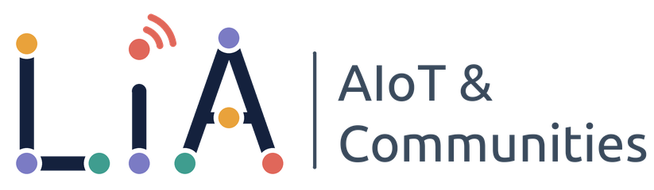
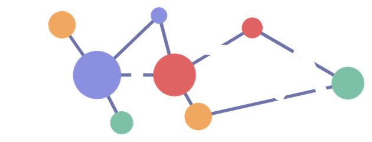

Sergi Trilles
Soy profesor titular en la Universitat Jaume I y subdirector del Institut de Noves Tecnologies de la Imatge (INIT), donde trabajo en el grupo GEOTEC.
Investigo cómo conseguir que sensores pequeños decidan por sí mismos, sin depender de la nube, y cómo enseñar a programar desde los cuatro años. Casi todo lo que hago acaba en algo que se usa: un kit para escuelas, una estación para viñedos y plataformas para ciudades.

Citas en Google Scholar
3.281
índice h 27 · i10 47
61artículos en revistas
30en el primer cuartil (JCR o SJR)
13proyectos como investigador principal

Proyecto que dirijo · desde 2025 Aprendizaje federado en comunidades de dispositivos AIoT. lia.uji.es
Proyecto AEI · equipo de investigación Comunidades de IoT e IA que comparten micro-modelos TinyML. coiotia.uji.es Producto · desde 2016 Kit y app para aprender pensamiento computacional desde los 4 años. programasucre.com Producto · viticultura de precisión
Estación IoT que avisa al móvil del riesgo de mildiu en el viñedo.
senviro.uji.es
Producto · viticultura de precisión
Estación IoT que avisa al móvil del riesgo de mildiu en el viñedo.
senviro.uji.es
Publicaciones recientes
Investigación
IA que corre en sensores diminutos, redes de dispositivos que aprenden juntas sin compartir datos, y datos geoespaciales que ayudan a decidir en ciudades y campos.
- IA en microcontroladores (TinyML)
- Aprendizaje federado y confianza en redes IoT
- Calidad del aire y movilidad
- Ciudades y agricultura inteligentes
- Pensamiento computacional en la escuela
Divulgación
Me encontrarás con un kit de Sucre en estas ferias y actividades:
MedNightFirUJICiènciaConnecta amb la CiènciaPractica la UJIIngenio Games
Premios
- 2026Best Demonstrator Award, TAEE (Sucre4Stem)
- 2025Premi Joves Investigadors UJI
- 2018Premio Junior 5UCV Startup
- 2018Jóvenes Emprendedores COPE (SEnviro)
¿Trabajamos juntos?
- Estudiantes: TFG, TFM o doctorado en AIoT, TinyML o datos geoespaciales.
- Centros educativos: talleres y formación docente con Sucre.
- Empresas y ayuntamientos: transferencia, contratos de I+D y despliegues IoT.
Escríbeme: strilles@uji.es
Otros proyectos
- CoAIoT: plataforma de IA para el Internet de las Cosas (Becas Leonardo, Fundación BBVA)
- NexTCity: gemelos digitales para ciudades sostenibles (Horizon Europe)